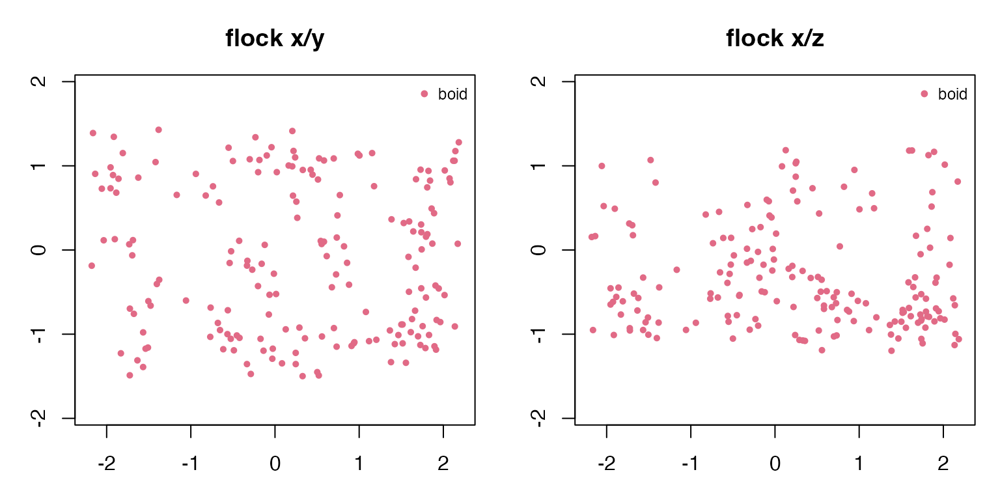
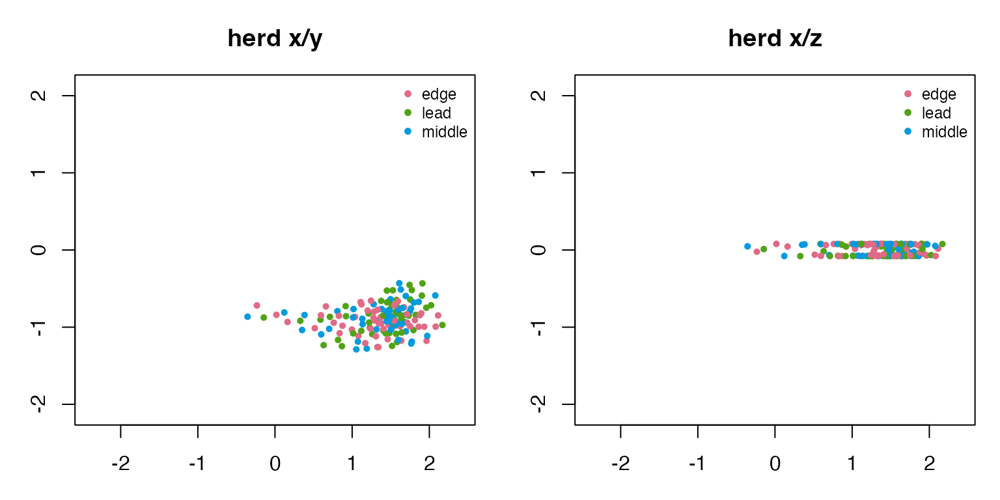
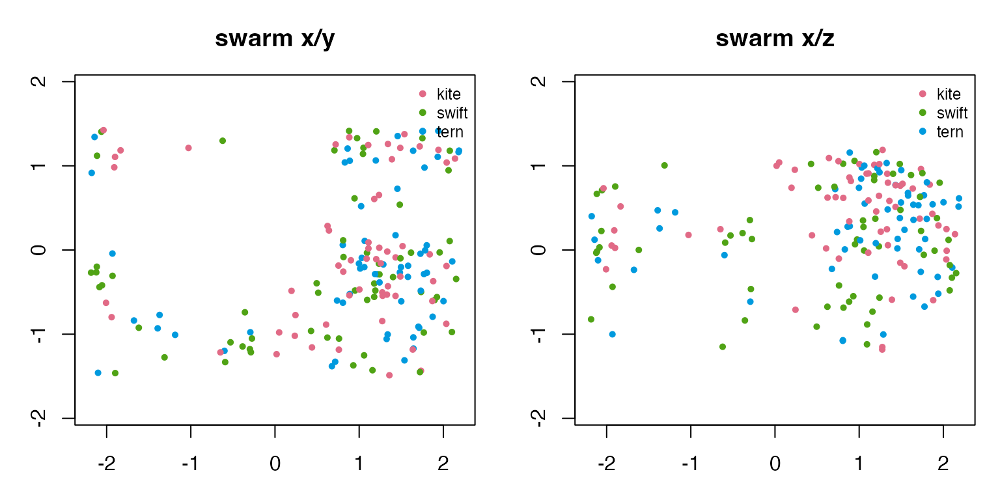
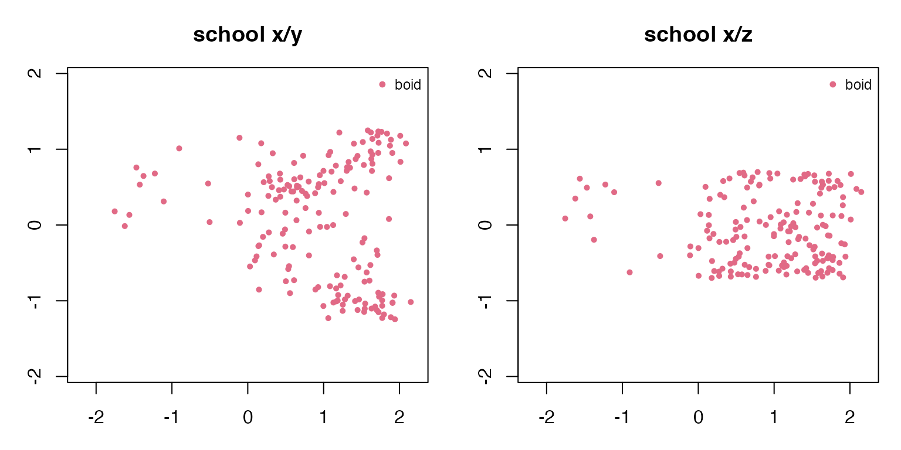
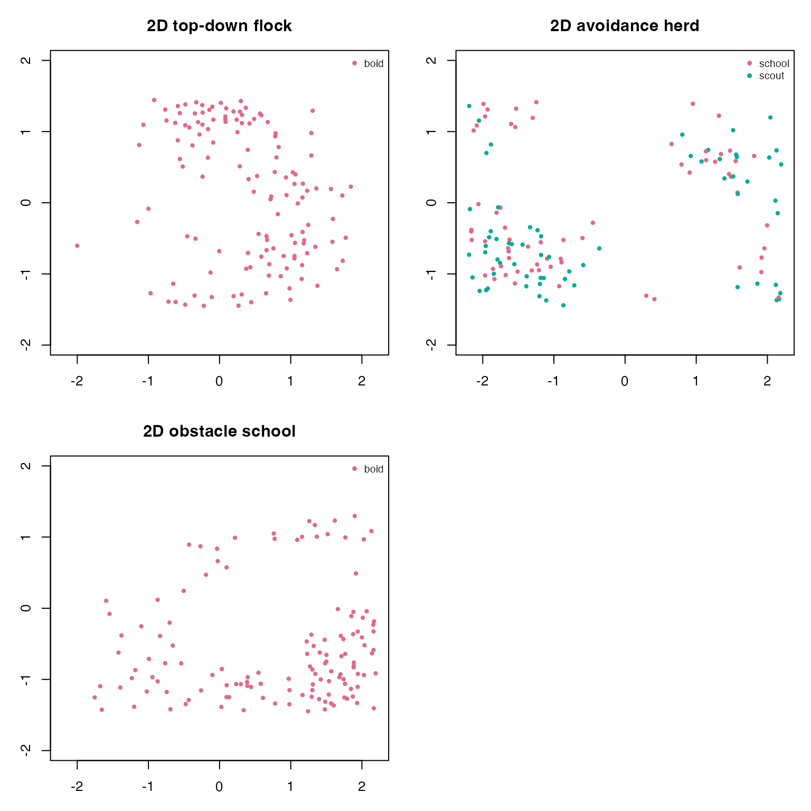

Flocks, Herds, Swarms, and Schools
Source:vignettes/flocks-herds-swarms-schools.Rmd
flocks-herds-swarms-schools.RmdThe same boids rules can be tuned to read as different collective-motion patterns. This vignette uses 3D examples as the main view, then adds 2D overhead variants where they help explain the movement.
Helpers
final_frame <- function(sim) {
frames <- as.data.frame(sim)
frames[frames$frame == max(frames$frame), , drop = FALSE]
}
mean_nearest_neighbor <- function(frame) {
if (nrow(frame) < 2L) return(NA_real_)
coords <- as.matrix(frame[, c("x", "y", "z"), drop = FALSE])
distances <- as.matrix(stats::dist(coords))
diag(distances) <- NA_real_
mean(apply(distances, 1L, min, na.rm = TRUE), na.rm = TRUE)
}
movement_summary <- function(sim, label) {
frames <- as.data.frame(sim)
final <- final_frame(sim)
data.frame(
label = label,
dimension = sim$dimension,
boids = length(unique(final$id)),
species = paste(sort(unique(final$species)), collapse = ", "),
frames = length(unique(frames$frame)),
mean_speed = round(mean(final$speed), 3),
xy_spread = round(mean(sqrt((final$x - mean(final$x))^2 + (final$y - mean(final$y))^2)), 3),
z_spread = round(stats::sd(final$z), 3),
mean_nearest_neighbor = round(mean_nearest_neighbor(final), 3),
stringsAsFactors = FALSE
)
}
species_palette <- function(species) {
keys <- sort(unique(species))
stats::setNames(grDevices::hcl.colors(length(keys), "Dark 3"), keys)
}
draw_projection <- function(sim, title, x_axis = "x", y_axis = "y") {
final <- final_frame(sim)
world <- sim$world
palette <- species_palette(final$species)
xlim <- if (x_axis %in% rownames(world$bounds)) world$bounds[x_axis, ] else range(final[[x_axis]])
ylim <- if (y_axis %in% rownames(world$bounds)) world$bounds[y_axis, ] else range(final[[y_axis]])
graphics::plot(
final[[x_axis]], final[[y_axis]],
xlim = xlim,
ylim = ylim,
asp = 1,
xlab = x_axis,
ylab = y_axis,
main = title,
col = palette[final$species],
pch = 16,
cex = 0.7
)
graphics::legend("topright", legend = names(palette), col = palette, pch = 16, bty = "n", cex = 0.75)
}
draw_two_projections <- function(sim, title) {
old_par <- graphics::par(mfrow = c(1, 2), mar = c(3, 3, 3, 1))
draw_projection(sim, paste(title, "x/y"), "x", "y")
draw_projection(sim, paste(title, "x/z"), "x", "z")
graphics::par(old_par)
}Build example simulations
Flocks and swarms use the named 3D scenarios. The school example narrows the 3D bounds into a water-column shape. The herd example is also 3D, but with a shallow vertical extent to represent animals moving over uneven ground.
flock_3d <- boids_scenario(
"murmuration_3d",
n = 180,
steps = 70,
record_every = 5,
seed = 501
)
swarm_3d <- boids_scenario(
"mixed_species_3d",
n = 180,
steps = 70,
record_every = 5,
seed = 502
)
school_bounds <- matrix(
c(-2.2, -1.25, -0.7, 2.2, 1.25, 0.7),
ncol = 2,
dimnames = list(c("x", "y", "z"), c("min", "max"))
)
school_3d <- simulate_boids(
boids_state(170, "3d", bounds = school_bounds, seed = 503),
boids_world(
"3d",
bounds = school_bounds,
boundary = "wrap",
attractors = data.frame(x = 0.75, y = -0.15, z = 0.05, strength = 0.32)
),
boids_params(
"3d",
separation_weight = 1.20,
alignment_weight = 1.15,
cohesion_weight = 0.98,
cohesion_radius = 0.72,
alignment_radius = 0.55,
max_speed = 1.20,
noise = 0.001
),
steps = 70,
record_every = 5,
seed = 504
)
herd_bounds <- matrix(
c(-2.4, -1.35, -0.08, 2.4, 1.35, 0.08),
ncol = 2,
dimnames = list(c("x", "y", "z"), c("min", "max"))
)
herd_i <- seq_len(150)
herd_positions <- cbind(
seq(-2.15, -1.25, length.out = 150),
0.55 * sin(0.23 * herd_i),
0.015 * cos(0.17 * herd_i)
)
herd_velocities <- cbind(
0.26 + 0.16 * sin(0.11 * herd_i),
0.08 * cos(0.19 * herd_i),
0.005 * sin(0.29 * herd_i)
)
herd_3d <- simulate_boids(
boids_state(
150,
"3d",
bounds = herd_bounds,
positions = herd_positions,
velocities = herd_velocities,
species = rep(c("lead", "middle", "edge"), length.out = 150),
seed = 505
),
boids_world(
"3d",
bounds = herd_bounds,
boundary = "reflect",
predators = data.frame(x = -1.75, y = 0.95, z = 0, radius = 0.72, strength = 0.9),
attractors = data.frame(x = 2.0, y = -0.45, z = 0, strength = 0.55)
),
boids_params(
"3d",
separation_weight = 1.05,
alignment_weight = 0.92,
cohesion_weight = 0.86,
predator_weight = 2.4,
goal_weight = 0.18,
max_speed = 1.05,
max_force = 0.095,
noise = 0.0005
),
steps = 75,
record_every = 5,
seed = 506
)Compare the 3D examples
examples_3d <- list(
flock = flock_3d,
herd = herd_3d,
swarm = swarm_3d,
school = school_3d
)
do.call(rbind, Map(movement_summary, examples_3d, names(examples_3d)))
#> label dimension boids species frames mean_speed xy_spread
#> flock flock 3d 180 boid 15 1.194 1.446
#> herd herd 3d 150 edge, lead, middle 16 1.050 0.431
#> swarm swarm 3d 180 kite, swift, tern 15 1.232 1.289
#> school school 3d 170 boid 15 1.195 1.006
#> z_spread mean_nearest_neighbor
#> flock 0.634 0.253
#> herd 0.069 0.091
#> swarm 0.588 0.254
#> school 0.453 0.212The x/y view shows the collective shape from above. The x/z view reveals which examples use a full 3D volume and which stay near a ground or water layer.
draw_two_projections(flock_3d, "flock")
draw_two_projections(herd_3d, "herd")
draw_two_projections(swarm_3d, "swarm")
draw_two_projections(school_3d, "school")
2D variants
Overhead 2D examples are useful for corridor, schooling, and avoidance experiments where the top-down geometry is the main story.
flock_2d <- boids_scenario(
"schooling_2d",
n = 130,
steps = 60,
record_every = 5,
seed = 601
)
herd_2d <- boids_scenario(
"predator_avoidance_2d",
n = 130,
steps = 65,
record_every = 5,
seed = 602
)
school_2d <- boids_scenario(
"obstacle_corridor_2d",
n = 130,
steps = 65,
record_every = 5,
seed = 603
)
examples_2d <- list(
top_down_flock = flock_2d,
avoidance_herd = herd_2d,
obstacle_school = school_2d
)
do.call(rbind, Map(movement_summary, examples_2d, names(examples_2d)))
#> label dimension boids species frames mean_speed
#> top_down_flock top_down_flock 2d 130 boid 13 1.147
#> avoidance_herd avoidance_herd 2d 130 school, scout 14 0.906
#> obstacle_school obstacle_school 2d 130 boid 14 0.999
#> xy_spread z_spread mean_nearest_neighbor
#> top_down_flock 1.142 0 0.144
#> avoidance_herd 1.658 0 0.118
#> obstacle_school 1.279 0 0.134
old_par <- graphics::par(mfrow = c(2, 2), mar = c(3, 3, 3, 1))
draw_projection(flock_2d, "2D top-down flock", "x", "y")
draw_projection(herd_2d, "2D avoidance herd", "x", "y")
draw_projection(school_2d, "2D obstacle school", "x", "y")
graphics::par(old_par)
Animate with ggWebGL
When ggWebGL 0.4.0 or later is installed, any of these
simulations can be handed to the optional adapter for timeline
animation. Current boids are larger than trail points, recent history is
faint, and velocity vectors inherit species colours unless a fixed or
role-based vector colour policy is requested.
if (requireNamespace("ggWebGL", quietly = TRUE) &&
utils::packageVersion("ggWebGL") >= "0.4.0") {
spec <- as_ggwebgl_spec(flock_3d, trail_length = 30, shader = "density_splat")
spec$render$timeline$autoplay <- TRUE
ggWebGL::ggWebGL(spec, height = 540)
}